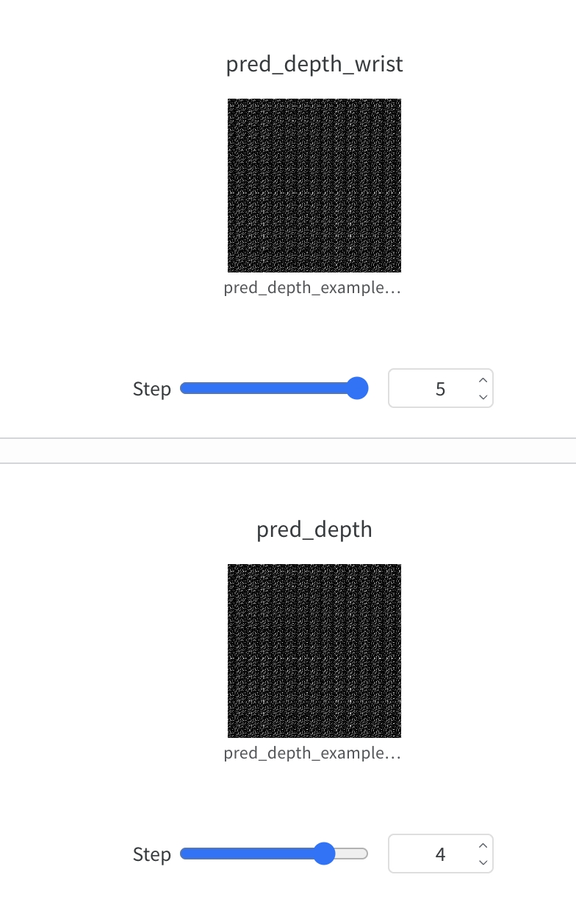
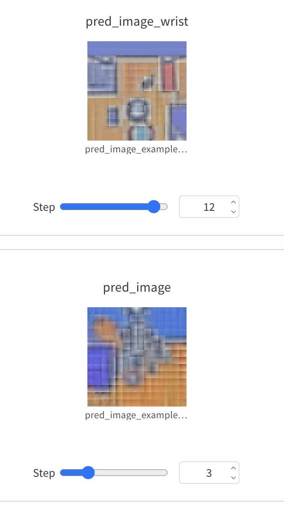
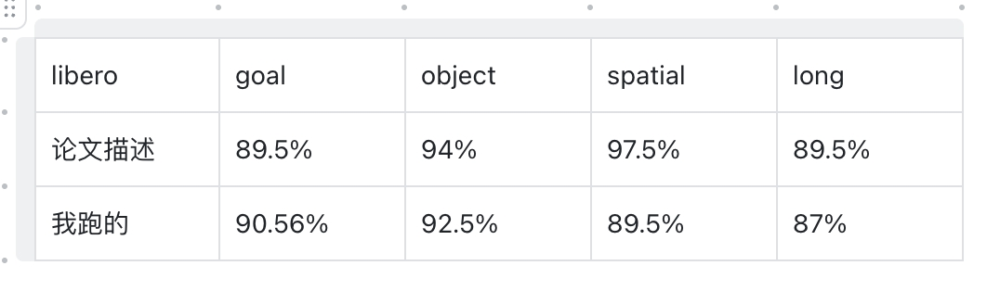
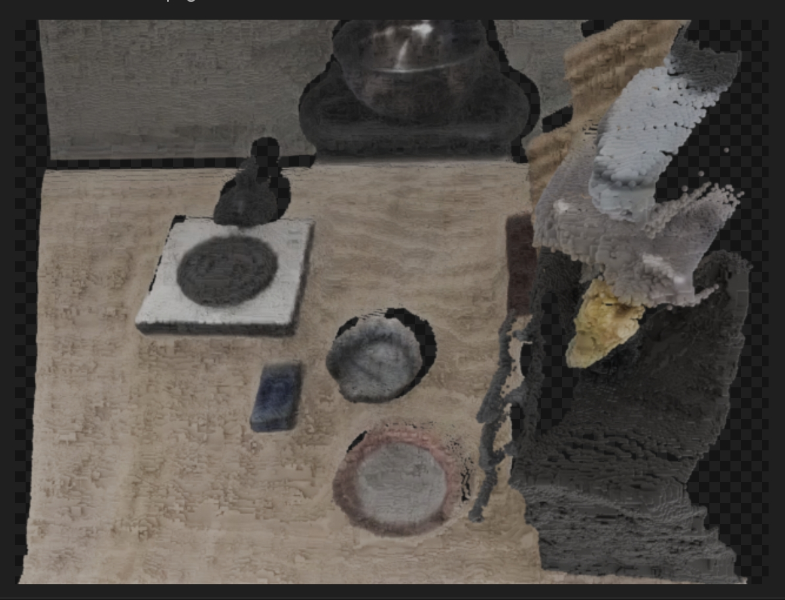
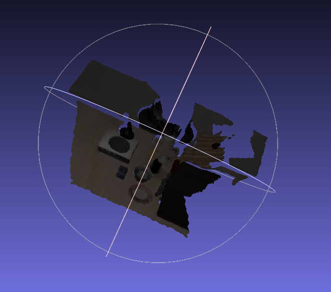
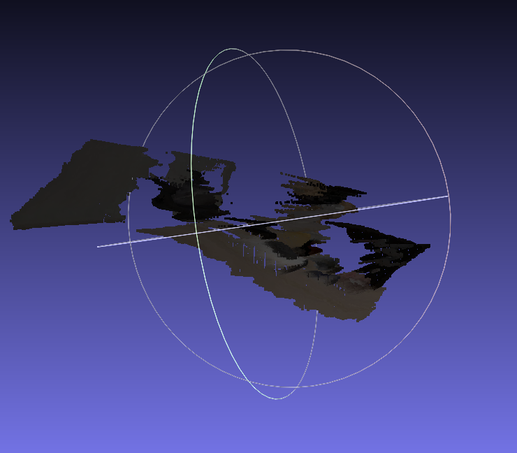
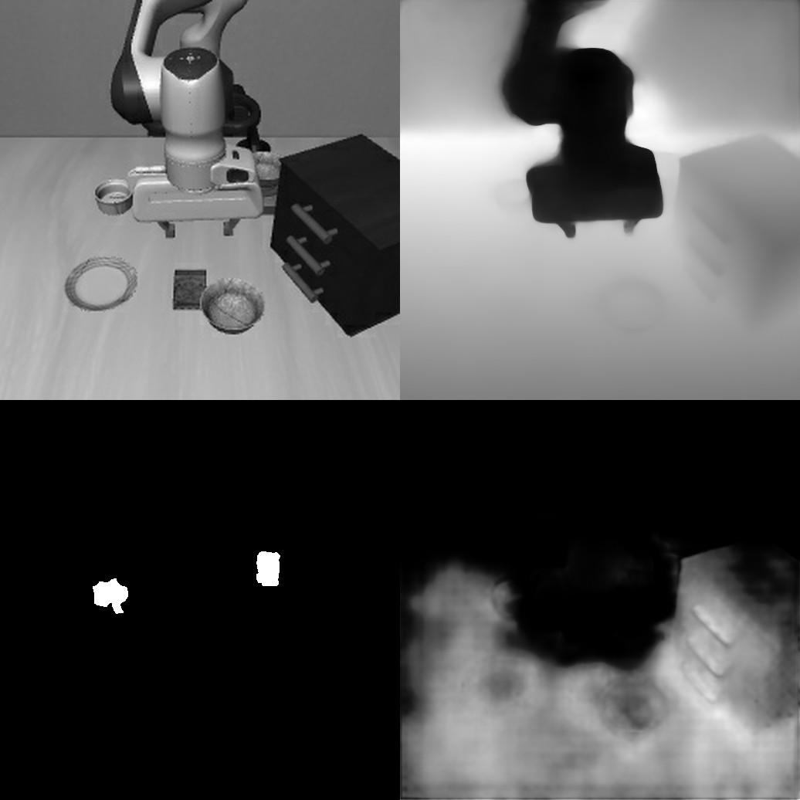
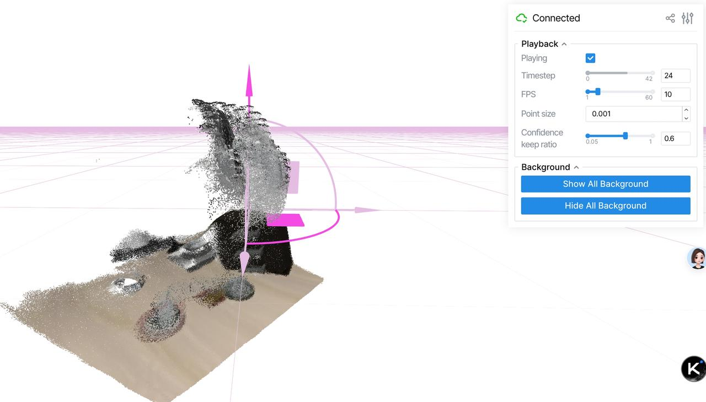

Vision-Language-Action
DreamVLA
DreamVLA integrates world-model imagination into robot manipulation policy learning through image and depth prediction.



Embodied AI / Robot Learning / Multimodal Models
I am Li Xiaotong, a sophomore at Southern University of Science and Technology in the School of Automation and Intelligent Manufacturing. My work focuses on vision-language-action models, 3D scene understanding, robot manipulation, and EEG-based computational neuroscience.
Reproduced AI and robotics systems
Current university GPA
TOEFL score
Research Direction
I enjoy reproducing frontier papers and understanding deep learning systems from implementation details to experimental behavior. My current interests include VLA policies, 3D reconstruction for manipulation, multimodal inference, and EEG signal analysis.
Selected Work
Vision-Language-Action
DreamVLA integrates world-model imagination into robot manipulation policy learning through image and depth prediction.



3D Perception / Robot Manipulation
Tesseract uses stereo depth estimation and 3D scene reconstruction to strengthen robot policy learning with spatial representations.



3D Scene Understanding
VGGT performs feed-forward 3D understanding, including camera poses, depth maps, and point-cloud reconstruction in a single forward pass.


Open-Source VLA
OpenVLA is an open-source vision-language-action model for general-purpose robot manipulation, fine-tuned from a large vision-language model.
Capabilities
Python, Java, PyTorch
Transformer architecture, CS336-style LLM training optimization, multimodal inference
IsaacLab, MuJoCo, RLinf inference framework, 6-DOF robot arm control
Linux, Git, AutoDL cloud platform, virtual environment management, profiling
Recognition
2025 Guangdong Provincial Climbing Plan Innovation Fund
Outstanding Graduate, Shenzhen Senior High School Junior Division
College Entrance English 144 / 150 / CET-4 652 / TOEFL 97